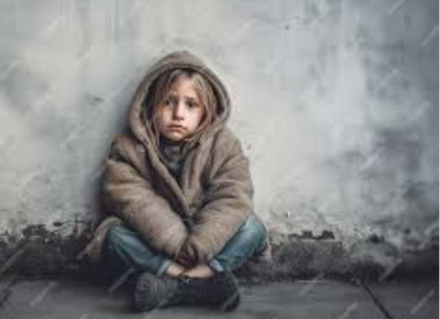

the life of young Ali took a tragic turn as relentless bombardments claimed the lives of his entire family. His parents, FATIMA and HASSAN, were ordinary citizens trying to provide a sense of normalcy amid the chaos of conflict. Fatima, a resilient homemaker, and Hassan, a local shopkeeper, strived to shield their children from the harsh realities of war.
The air raids that descended upon their neighborhood brought devastation, turning once lively streets into scenes of rubble and despair. Omar's home, a haven of familial warmth, was reduced to ruins, and the laughter that once echoed through the halls was replaced by the deafening sounds of destruction.
Before the bombings, Ali's childhood was marked by the simple joys of family life. His parents' dedication to creating a stable and loving environment offered a sense of security. Evenings were spent huddled together, sharing stories and dreams of a peaceful future.
Now, orphaned and grapplpling with the aftermath of tragedy, Omar navigates a world scarred by loss. The memories of his family linger as a bittersweet reminder of a life that once was. In the midst of the wreckage, he strives to find meaning and hope, searching for fragments of normalcy amid the chaos.
The international community is urged to acknowledge the toll war takes on innocent lives, especially on children like OMAR who find themselves orphaned and displaced. OMAR's story serves as a stark testament to the urgent need for collective efforts to mitigate the impact of conflict and create a world where children can grow up without the specter of violence, where the echoes of destruction are replaced by the promise of a brighter tomorrow.